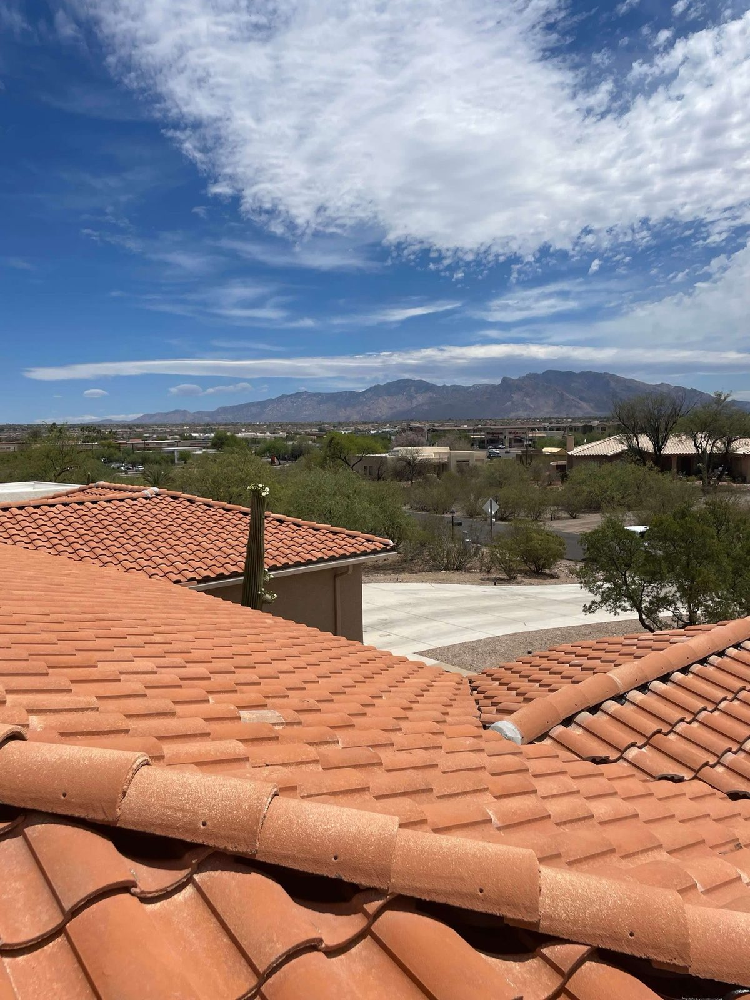

Roofing · Sahuarita & Green Valley, AZ
Roofing in Sahuarita & Green Valley, AZ
We cover the Sahuarita and Green Valley communities south of Tucson, from Rancho Sahuarita's family neighborhoods to the established retirement communities in Green Valley. Honest roofing, done right.
- Family-owned — the Guillens
- Free, no-pressure inspections
- Licensed & Insured · ROC #358079
- Tile, shingle, metal & flat
Serving Sahuarita & Green Valley
Your local roofer in Sahuarita & Green Valley
Folks in Sahuarita and Green Valley deserve a roofer who actually shows up, tells you what's going on in plain terms, and charges fair, and that goes double in Green Valley's retirement communities where trust really matters.
We cover both communities with the whole range: repairs, replacements, tile underlayment work, and free inspections with photos and no pressure.
- Repairs, replacements & new roofs
- Tile, shingle, metal & flat
- Storm & monsoon damage response
- Free, documented inspections
We actually work here
We're on Sahuarita & Green Valley roofs just about every week — we know the neighborhoods, the HOA rules, and the way our sun and monsoons wear a desert roof down.
We pick up when it's leaking
Monsoon peel part of your roof back? We tarp it fast, document the damage for your claim, and get you dried in — day or night.
Our name's on it
ROC #358079 — licensed, bonded and insured. If something's not right, we own it and make it right. No excuses, no runaround.
Full Service
Everything Sahuarita & Green Valley roofs need
From the first little drip to a full tear-off, we handle whatever Sahuarita & Green Valley roofs throw at us — tile underlayment, shingle and metal installs, flat-roof coatings, emergency repairs. One local family, not a different sub crew every time.
You'll spot our trucks around Rancho Sahuarita, Quail Creek, Madera Highlands and the Green Valley retirement communities regularly, so we already know the HOA rules and the kind of homes Sahuarita & Green Valley is built from.
How It Works
Our Roofing Process
Call or text Eddie
Get us at 520-753-1758 and we'll set up your free Sahuarita & Green Valley roof look — no obligation, no closer in a polo.
We climb up and look
We get on the roof, take photos, and tell you what's really going on — not whatever rings up the biggest.
Honest written estimate
Itemized pricing, real repair-vs-replace advice, and financing if you want it. No scare tactics.
We do it right
Our own crew, a clean job site, and a warranty that means we come back if it ever needs us.
FAQ
Roofing Questions, Answered
Still wondering about something? Call us at 520-753-1758 — straight answers, no pressure.
Ask Us DirectlyDo you serve Sahuarita and Green Valley?
Yep, all over Sahuarita and Green Valley, Rancho Sahuarita, Quail Creek, Madera Highlands and the Green Valley retirement communities.
Do you offer honest, no-pressure estimates?
Always. The inspection's free and the estimate's itemized and straightforward, no scare tactics. We're especially careful about that in the Green Valley retirement communities.
Can you replace tile underlayment in Green Valley?
Yep. A lot of tile roofs around Green Valley and Sahuarita need new underlayment around the 20 to 25 year mark. We pull the existing tile and re-lay it over fresh underlayment, way cheaper than a whole new tile roof.
Do you handle insurance claims for storm damage?
We do. We document monsoon and storm damage with photos and we'll work with your adjuster to back up the claim.
Are you licensed and insured?
Yep. Sunrise Roofers LLC is licensed, bonded and insured, ROC #358079.
Need a roofer in Sahuarita & Green Valley?
Free inspection and a straight estimate from a licensed Tucson family that actually works Sahuarita & Green Valley and the rest of Pima County. You call, you get Eddie.
Let's Talk
Let's Take a Look at Your Roof
Tell me what's going on up there — a leak, storm damage, an old roof that's seen better days, or a full replacement — and we'll get you on the books for a free inspection.